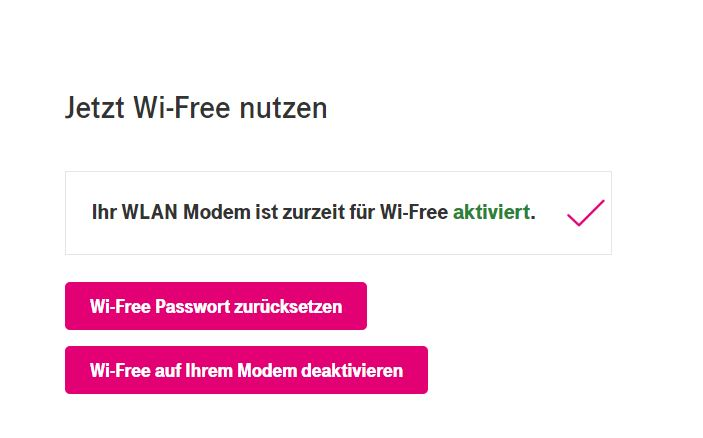
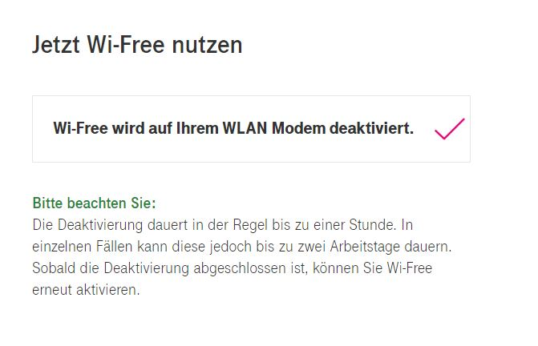
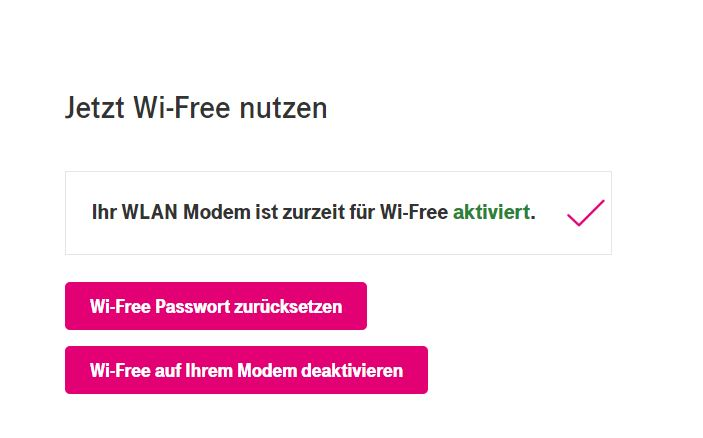
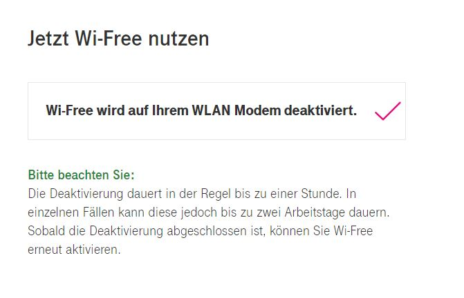

Hi @bansheeat Wi-Free kannst du über Mein Magenta de- bzw. aktivieren. Logg dich bitte ein und klicke auf den Reiter Wi-Free.
{kind=link}
Danach kannst du die entsprechenden Einstellungen vornehmen.
 
Gutes Gelingen
 . LG, Karo
. LG, Karo
Ich habe über den WhatsApp Chat mein vorhandenes TV S Paket um Internet Fiber 75 erweitert. Heute kommt laut DPD die Connect Box.
In meinen Kundendaten ist aber noch immer nur TV S vorhanden. Wird das Internet erst aktiviert, wenn ich die Box anstecke ?
Hi @bansheeat ,
sobald du die Internet Fiber Box übernommen hast, kann es nochmal bis zu 24 Stunden dauern bis auch datenbankseitig alles geändert wurde. Schau am besten morgen oder übermorgen nochmal nach. Das Internet sollte aber unmittelbar nach dem Anschließen und einer kurzen Installationsphase funktionieren. Liebe Grüße, Jonathan
Danke Jonathan, das Internet funktioniert, aber leider nur mit ca. 30 Mbit. Ich habe aber Fiber 75 abgeschlossen. Sollte ich diesbezüglich auch noch abwarten oder mich gleich bei Magenta melden ?
Hi @bansheeat ,
du solltest eigentlich über den vollen Speed verfügen. Wichtig ist, dass du die Geschwindigkeit nur über eine Kabelverbindung (LAN) misst. Über WLAN kann es zu Schwankungen kommen. Verwende zum Prüfen diesen Speedtest hier: https://www.netztest.at/de/ . Liebe Grüße, Jonathan
Ja, Speed ist jetzt in Ordnung, in meinem Account scheint jetzt auch TV S, Internet Fiber 75 und Digital Telefon auf.
Aber ich möchte Wi-Free deaktivieren, diesen Punkt finde ich nicht unter Service.
Wer kann mir da helfen ?
Hi @bansheeat Wi-Free kannst du über Mein Magenta de- bzw. aktivieren. Logg dich bitte ein und klicke auf den Reiter Wi-Free.
Danach kannst du die entsprechenden Einstellungen vornehmen.
 
Gutes Gelingen
 . LG, Karo
. LG, Karo
Danke, dieser Punkt Wi-Free war bis gestern nicht in mein Magenta vorhanden. Heute schon, habe es bereits erledigt

@bansheeat
super